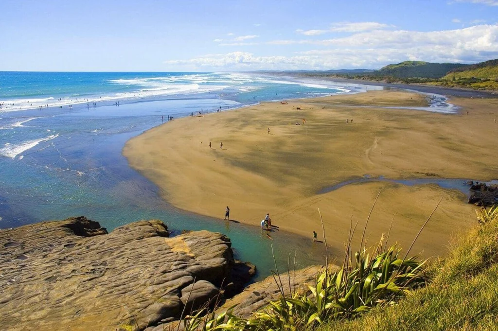
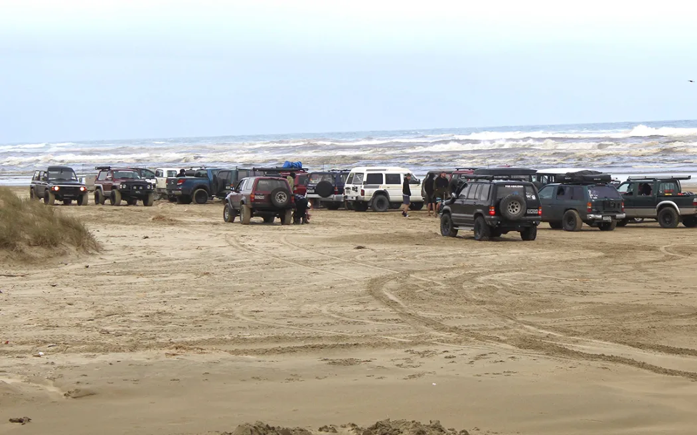
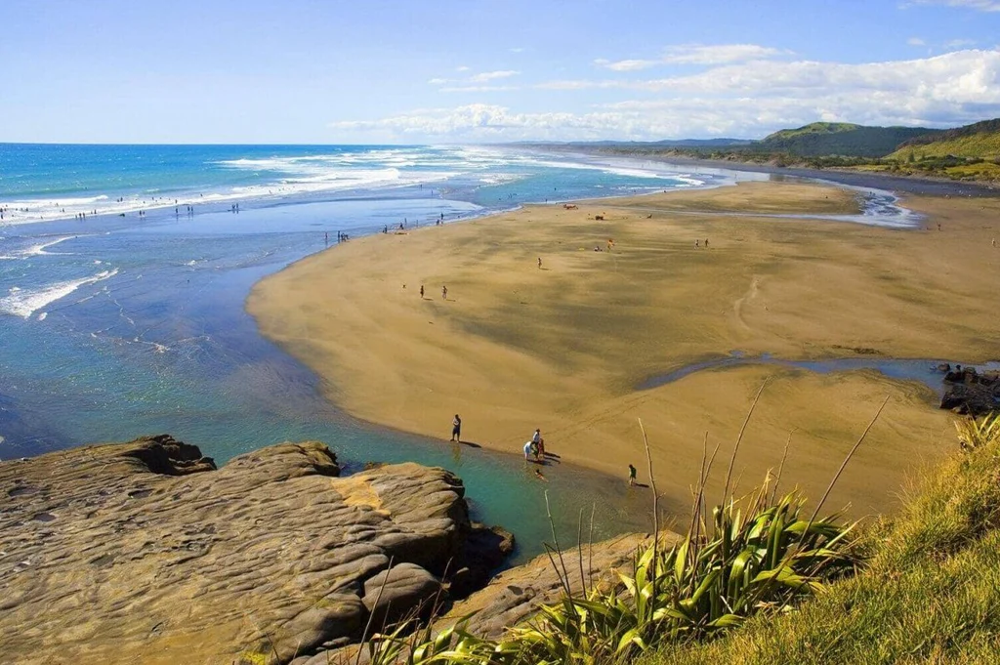
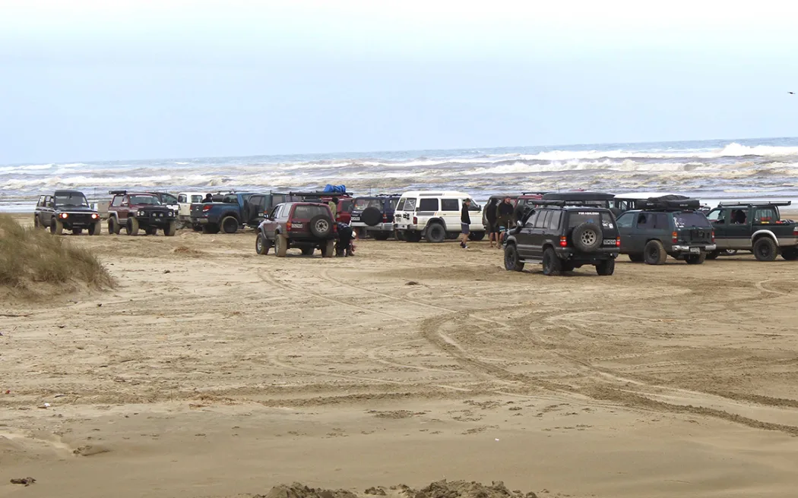

2100 Coast Road, Muriwai 0881
Sandy
Medium
 



Muriwai Beach is a popular coastal destination located on the west coast of New Zealand's North Island, about 40 kilometers northwest of Auckland. Known for its rugged beauty, black sand, and strong surf, Muriwai is a favorite spot for surfing, fishing, and birdwatching, particularly at the nearby gannet colony.
4WD access to Muriwai Beach allows vehicles to drive along the beach, offering a unique way to explore the coastline. The designated access points for 4WD vehicles are at the southern end of the beach near the Muriwai Beach car park. However, permits are required for 4WD access, and drivers must adhere to local regulations to protect the environment and ensure safety. The beach can be treacherous due to soft sand and changing tides, so drivers are advised to be cautious and prepared for the conditions. To get on at the most popular entrance, drive to the end of Coast Road off Motutara Road, be sure to turn right once on the beach as going left is prohibited for vehicles.
Please remember this is a public road drive, and can only be done between the low and high tide marks. It's very important not to venture onto the dunes, above the high tide mark.